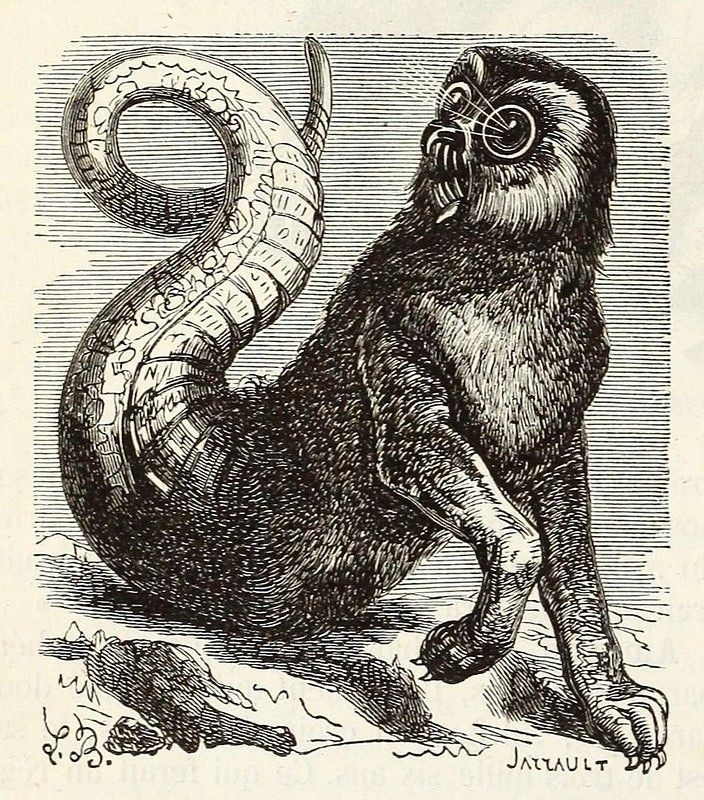
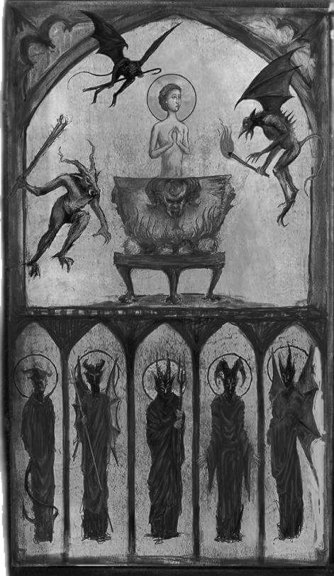

Aamon
En los grimorios antiguos, entre listas de nombres sellados con tinta y temor, aparece uno que no se pronuncia a la ligera: Aamon.
En la tradición demonológica europea, especialmente en textos como la Ars Goetia —primer libro de La Llave Menor de Salomón— Aamon figura como uno de los grandes espíritus del Infierno, descrito como un marqués poderoso que comanda legiones.
No es una entidad del caos descontrolado.
Es una inteligencia estratégica.

apariencia
Los textos lo describen con una forma inquietante y simbólica.
Se manifiesta como un lobo con cola de serpiente, vomitando llamas. En ocasiones, posee cabeza de cuervo con colmillos afilados. Sin embargo, cuando así lo decide, puede adoptar forma humana, presentándose como un hombre de semblante severo y mirada penetrante.
El lobo representa instinto y caza.
La serpiente, astucia y traición.
El cuervo, conocimiento oscuro y memoria.
Nada en su iconografía es casual.
Su dominio
Los textos lo describen con una forma inquietante y simbólica.
Se manifiesta como un lobo con cola de serpiente, vomitando llamas. En ocasiones, posee cabeza de cuervo con colmillos afilados. Sin embargo, cuando así lo decide, puede adoptar forma humana, presentándose como un hombre de semblante severo y mirada penetrante.
El lobo representa instinto y caza.
La serpiente, astucia y traición.
El cuervo, conocimiento oscuro y memoria.
Nada en su iconografía es casual.
Pactos e invocacion
Dentro de la tradición goética, la invocación de Aamon requiere disciplina estricta: círculo de protección, sello específico (sigilo), recitación ritual y concentración absoluta.
Los grimorios advierten que el respeto es fundamental.
No se le llama por curiosidad trivial.
Se le invoca cuando se busca entender traiciones, descubrir enemigos ocultos o restaurar relaciones destruidas. Pero todo conocimiento revelado tiene consecuencias. Saber quién te traiciona puede romper vínculos que jamás volverán a repararse.
Aamon concede claridad.
No garantiza paz.

La ira de un demonio
Las tradiciones advierten que si se rompe un pacto o se realiza la invocación sin preparación, la influencia de Aamon puede volverse conflictiva.
Confusión entre aliados.
Desconfianza injustificada.
Rupturas repentinas.
Revelaciones que destruyen más de lo que construyen.
No es un demonio de destrucción física inmediata. Es un desestabilizador de relaciones, un expositor de verdades incómodas.
Y una vez que algo ha sido revelado, no puede volver a ocultarse.
Aamon representa una idea antigua y peligrosa: que el conocimiento es poder, pero también es ruptura.
Quien lo invoca debe preguntarse si realmente desea saber.
Porque hay secretos que sostienen equilibrios frágiles.
Y hay verdades que, una vez pronunciadas, jamás vuelven al silencio.
Si alguna vez sientes que una sospecha toma forma clara en tu mente, como si alguien hubiera corrido el velo de la duda… tal vez no fue intuición.
Tal vez fue una mirada invisible, paciente, esperando el momento exacto para mostrarte lo que siempre estuvo allí.